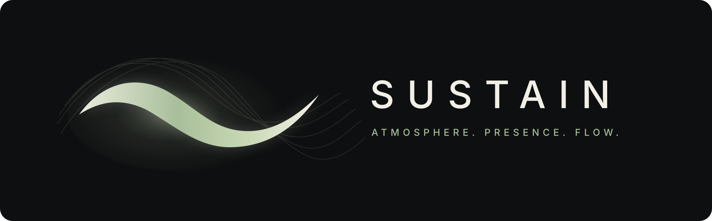

SUSTAIN
Atmosphere. Presence. Flow.
Primary Dark Icon
Single-wave icon with subtle resonance field.
Light Icon
Light-surface version for marketing and alternate contexts.
Monochrome Variant
Simplified icon for constrained use cases.
Compact Symbol
Small symbol-only variation.

Wordmark Lockup
Primary dark lockup with mark, name, and tagline.
Mark Only
Standalone horizontal mark for flexible layouts and UI treatments.